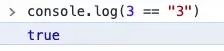
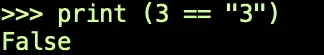
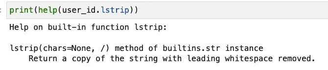
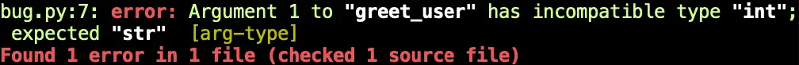
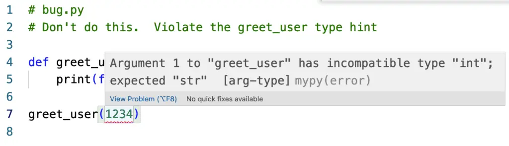
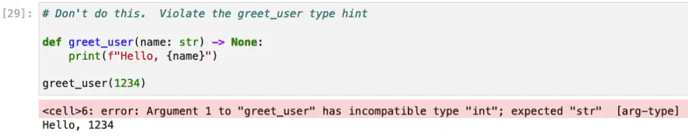

Understanding Python Types and Type Hints¶
Introduction¶
One of Python’s beginner-friendly features is that newcomers don’t need to declare or think about data types very much, at least not at first. Variables are never declared. They pop into existence as if by magic when you first assign them.
message = "Hello world."
In Java, in contrast, one writes a variable declaration as follows, putting the type information right up front:
String message = "Hello world.";
The same “looseness” applies to function parameters and return values. In Java, these must be explicitly declared, and the compiler will complain if you don’t:
static String greeting(String name) {
return "Hello " + name + "!";
}
As you may know, we can do the same thing in Python without the explicit “String” type appearing either in the parameter list or the return value:
def greeting(name):
return "Hello " + name + "!"
Although it is convenient both for newcomers to the language and for experienced programmers who want to fire off a quick-and-dirty Python script, this looseness has some disadvantages. We’ll discuss some of these and the solution to them.
In this article, we want to consider several aspects of Python’s type system. We’ll discuss some functions beginners should know for exploring Python types, before discussing a few of the many features of Python’s type hinting system and the typing module.
Before moving onto those topics, let’s begin by examining what happens when a variable is created and discussing the common misconception that Python is weakly typed.
Is Python Weakly-Typed?¶
Weakly Typed vs. Dynamically Typed¶
We saw above that we create Python variables by assigning them, not by declaring them. On the surface, this appears similar to the type inference supported in some languages like Rust and later versions of C# and Java. Unlike those languages, however, Python variable types are not yet fixed at that point for the length of the program.
If we ignore that bad practice of a poorly named and ambiguous variable for a moment, the following is a perfectly valid Python program:
x = 42
print(x)
x = "Hello"
print(x)
Output:
42
Hello
Many folks will take the fact that variables don’t need to be explicitly declared to mean that Python is weakly typed. In the excellent book, Fluent Python, Luciano Ramalho sheds some light on this. Weakly typed languages like JavaScript are languages where type conversions are very common, as opposed to strongly typed ones, where they are rare.
The above code, in contrast, shows that Python is a dynamically typed language as opposed to one with static typing. As the name suggests, this distinction more precisely captures the fact that in Python, a type can change as the program runs.
No type conversion is taking place in the print call. What’s going on behind the scenes is that if the input to print is not a string, Python print will first try to convert it to one using a dunder method on the object (actually it tries __str__() first, then __repr__()). Because of this, print(42) gives the same output as the more verbose call:
print((42).__str__())
Even if the type of an object can change at runtime, Python never loses sight of the type it contains at any given time. Contrast this with JavaScript, where because of type conversions a special operator, ===, is used to compare objects while suppressing the type conversion. Without this crutch, in JavaScript:

In Python, because the types are dynamic, the comparison is still allowed, but because the language is strongly typed, we get a more expected (or at least, more type-aware) answer:

Python, then, is dynamically typed, not weakly typed.
Behind the Scenes of Variable Assignment Using Python’s Disassembler¶
If you’re curious about what Python’s doing behind the scenes when a variable gets assigned or reassigned, you can get explore the bytecode that Python generates when it happens. We can use Python’s dis (disassembly) module for this. (Note that this is part of the standard runtime, and does not need to be installed using Pip).
Let’s see what happens when we assign a variable to a numerical constant, a string constant, and another variable.
from dis import dis
def show_variable_use():
x = 42
x = "Hello"
y = x
dis(show_variable_use)
Output:
4 0 LOAD_CONST 1 (42)
2 STORE_FAST 0 (x)
5 4 LOAD_CONST 2 ('Hello')
6 STORE_FAST 0 (x)
6 8 LOAD_FAST 0 (x)
10 STORE_FAST 1 (y)
12 LOAD_CONST 0 (None)
14 RETURN_VALUE
The leftmost column refers to the line number in the source, so on line 4, the two bytecodes LOAD_CONST and STORE_FAST Load the constant value 42 to an int object, then save it in the variable (reference) named x. A similar thing is happening on line 5, except we’re now loading a string constant to an object and saving a reference to it in x. (The original int object is now eligible to be garbage collected). Finally, on line 6, we introduce a new variable, and here instead of loading a constant to an object, we look up the variable using LOAD_FAST.
Exploring Python Variables and Types: A Guide for Beginners¶
Before we begin, if objects are new to you, you might want to read Python Classes Zero to Expert: A Tutorial With Exercises.
Unlike languages like Java and C#, there are no “primitive types” in Python, only references to objects. That means things like numerical literals are also objects. So are functions and almost anything you can write in Python except operator symbols like +, -, etc. (Soapbox: for a language that some people unfairly criticize as “just a scripting language”, Python is one of the most thoroughly object-oriented languages I’ve ever used).
Python objects and the types they’re based on have excellent support for inspection. You can inspect their type and what functions they support, and get interactive help based on the docstrings in the code. Suppose we have a variable, user_id, and we want to know if it’s stored as an integer or a string. We could print it, but if it’s an integer value stored as a string, the output will be the same, as we saw above.
The Python Type Function: Displaying the Object Class of a Variable¶
The most common approach to discovering a variable’s type in Python is the simplest: use the type function:
print(type(user_id))
# Outputs (for example)
# <class 'str'>
Listing the Available Functions in Python with Dir¶
Python’s dir function returns the methods on an object as a list.
Now suppose need to manipulate the user_id a bit. For example, let’s say we’ve been asked to trim the whitespace only on the left side of the user_id. Before writing some code to do that, let’s see if there’s a method available on the string class. We can display the available functions as a list using print(dir(greeting)). This will print a rather long list, but scanning through it quickly, we see a section that looks like this:
...'lower', 'lstrip', 'maketrans', 'partition'...
We don’t see anything like trim_left, but lstrip looks promising.
Getting Help: Reading the Function Documentation¶
Let’s print out what it does with the help function. The screenshot below shows the output we’re interested in:

Sure enough, lstrip is exactly the function we want in this case. By the way, if you’re working in Jupyter Notebook, you can get the same information using user_id.lstrip?
Python Type Hints: Making Types Explicit¶
Why Python Introduced Type Hints¶
Although Python’s dynamic types make it beginner friendly, it has some unintended consequences.
The first consequence has to do with performance. As a rule, statically typed languages can take advantage of compile-time optimizations and have less overhead at runtime, so their performance is generally better than dynamically typed languages. C, C++, and Rust are all more performant than Python or Ruby, for example.
The second consequence of dynamic typing is that, although it’s beginner-friendly, there is no way to do static checking to ensure that arguments to functions have the correct type, or that what’s returned from the function is correct. As we’ll see shortly, this is the problem that type hints solve, but first, let’s look at an example to illustrate the problem.
Taking our old friend user_id, consider the following code, which presumably reads a user from a database.
def get_user(user_id):
# Returns something ...
With the above information, we don’t really know how to call the function without reading it. Is user_id a string? An int? Perhaps it’s a uuid (a unique identifier object)? Also, what’s returned from the function? We might guess that It’s a user object, but it could just as well be a dictionary or a string with the user’s first and last name. By convention, the has a docstring to help so you can use help on it, but it would be nice if we could both understand it at a glance and have a tool to validate the results.
Type Hint Typing Module and Basic Syntax¶
To address this second consequence, Python 3.5 introduced a new module, typing, which formally added many new, related classes to help make type hints available to the Python language. (For completeness, we should point out that although type hints were officially available in 3.5, the syntax it relies on is somewhat backward compatible).
Python’s type hints make it easy to rework the function above. For example, suppose we replaced it this way:
from models import User
def get_user(user_id: int) -> User:
# ...
Several advantages fall out of this simple change:
We now know at a glance that the user_id is an integer value. Perhaps it’s a key to an auto-increment field in a SQL database.
We know that a User object is returned.
If we want more information about the User object, most IDEs will let us navigate to the definition of the class easily. For example, in VS-Code, you can alt-click (cmd-click on Mac) on the User object to bring you to the object’s source code.
Breaking down the syntax a bit:
The parameter’s name comes first, followed optionally by a colon and a type.
If there’s a default value for the parameter, it comes after the type. For example:
def set_shipping_option(default: str = "ground")...For return values, place an “->” after the closing parenthesis, not after the colon marking the block. Follow this with the type returned and a colon.
Static Type Checking in Python¶
Type hints are optional and will remain so – this is by design. So you don’t need to add them. Nor does adding them change the behavior of your program in any way. This is even true of cases where your program calls a function “incorrectly.” Consider the following program, which we’ll call bug.py:
# bug.py
# Don't do this. Violate the greet_user type hint
def greet_user(name: str) -> None:
print(f"Hello, {name}")
greet_user(1234)
You might expect that program to fail based on the type declaration, but it runs fine. The goal of the typing specification as outlined in PEP 484 was to standardize and support the function annotations that type checking was based on. As it’s outlined there:
Note that this PEP still explicitly does NOT prevent other uses of annotations, nor does it require (or forbid) any particular processing of annotations, even when they conform to this specification. It simply enables better coordination, as PEP 333 did for web frameworks.
To expose the bug in bug.py, we need to run it through a third-party static type checker. One that’s commonly used for this purpose is mypy
Using MyPy for Static Type Checking¶
Getting Started¶
You can install mypy easily using either pip or conda. Once installed, you can run it on either a package or a single file. The screenshot below shows the result of running the following command on the program above:
mypy bug.py

Running mypy from the command line like this is certainly one way to go, and is commonly used in automation to ensure our code is correct as we go along. For example, git users may want to automate this using a pre-commit hook.
For day-to-day development, however, it’s better to correct these errors as soon as we make them. With this in mind, let’s consider integrating mypy with VS Code or Jupyter.
Using MyPy with VS Code¶
Assuming you installed mypy as above into the environment that’s set as your current Python interpreter in VS Code, you can easily enable mypy in two steps:
In the command palette (Shift-Alt-P / Shift-Cmd-P), search for lining and select “Python: Enable/Disable Linting,” then click on “Enable.”
Next, also in the command palette, search for “Python: Select Linter,” and in the list that pops up, select mypy.
Once this is done, the value 1234 in greet_users will have a red wavy line beneath it to signal an error (easier to see on a light theme). If you need more information, you can hover over the error to see details:

Using MyPy with Jupyter Notebook / Jupyter Lab¶
If you’re using Jupyter, the nb-mypy package provides excellent support for validating type hints with mypy. To get started with nb-mypy, install it using pip. (As far as I know, no Conda packages are available for it in the main Conda channels). Once it’s installed, you enable it in Jupyter using the following command:
%load_ext nb_mypy
An excellent feature of this extension is how foolproof it is. Nb_mypy checks each cell as you try to run it. For example, here’s what we get when we copy the contents of bug.py into Jupyter:

Advanced Type Hints and the Python Typing Module¶
So far, the examples we’ve shown have all been pretty simple, using built-in and user-defined types. In this section, we want to cover a few slightly more advanced techniques and some of the features of the typing module.
Collections Types and Type Aliases¶
We’ve covered how to work with simple types, but next, let’s consider how to work with collection types. There are two ways you might want to specify a collection type. You might want to enforce that a function accepts or returns a collection containing any element. In this case, you can simply use the collection type name:
def get_list() -> list:
return [1,2,3,4]
A second common option is to make the type hint more precise by specifying the type the collection must contain. In Python 3.9 and above, you can use the collection name directly, followed by the type in square brackets. Here is an example, where we enforce that both the key and the value will be strings:
def get_blog_info() -> dict[str, str]:
return {"url": "https://codesolid.com", "topic": "Python"}
Before version 3.9, if you needed to use generics like this, you had to import a class designed for that purpose from the typing module. Often the names of these classes were the uppercased version of the class name for the collection: List, Set, Dict, etc. Here for example we specify that a factorial function must be passed a list of integers:
# Use this for 3.8 and earlier, otherwise just use lowercase "list":
from typing import List
def factorial(list_of_ints: List[int]) -> int :
"""returns a factorial of a list of integers, cf https://en.wikipedia.org/wiki/Factorial"""
sum = 1
for val in list_of_ints:
assert val > 0
sum *= val
return sum
first_five = [x + 1 for x in range(0,5)]
print(factorial(first_five))
Output: 120.
Importing these names from the typing module is now deprecated, and may be removed sometime after October 2025 (Python 3.9’s end of life), per PEP 585.
If you have a typed collection or other type declaration that you use often, type aliases are easy to write and let you specify an alias for that type. The syntax is simply AliasName = type specification. For example, here are some type aliases for two different kinds of dictionaries, and an example showing one of them in use:
# Type aliases
MapIntToInt = dict[int, int]
MapStringToInt = dict[str, int]
def get_ages() -> MapStringToInt:
return {'mom': 22, 'dad': 34}
Union Types¶
A union type allows you to specify that a function will accept or return one of two or more types. For example, suppose you were writing a function that accepts a date, and you want to specify that it will either take a date in a known format (for example, “2015-03-15”) or a Python date object. You could do it like this:
from datetime import date
from typing import Union
def show_expiration(expires: Union[date, str]) -> None:
print(f"Expires on: {expires}.")
show_expiration("2059-06-20")
show_expiration(date(2059, 6, 20))
Note that beginning in Python 3.10, you can write union types more concisely. The function above, for example, could be written as:
def show_expiration(expires: date | str) -> None:
print(f"Expires on: {expires}.")
This more recent syntax can also be used to express an optional type. An optional type either contains a value or None. For example, float | None represents an argument that’s either a float or None. Before 3.10, this could be done would be written using the Optional type, as shown below:
from typing import Optional
def some_function(param: Optional[float]) -> None:
# . . .
Literal Types¶
Generally speaking, type hints are aptly named because they don’t let you check anything except the type. Literal types are an exception to this general rule, however, since they let you check that a parameter is a given value, or within a range of values.
Suppose we’re writing a comparison function for a sort operation. We’re passed two strings, and have to return 1 if the first would come before the second in a language dictionary, zero if they’re the same, or -1 if the first comes after the second. Here is how the function might be written to make the return value clear:
from typing import Literal
def compare_strings(first: str, second: str) -> Literal[-1, 0, 1]:
# . . .
Conclusion¶
If you made it this far, thank you for hanging in there! There was a lot to digest. Even with all that, we haven’t covered everything there is to learn about the typing module. For more detailed information, the following Google query will fetch you the most current official documentation: “docs.python.org typing.”
Type hints are a great feature in Python 3 that can make your code easier to understand and therefore easier to use. It also enables automatic checking, meaning your code is more likely to be correct. Having the types specified explicitly also makes it easier to navigate in an IDE.
Best of all, it’s optional. If you just need to write a quick script, you can still write your functions as you always did. However, type hints are definitely the way to go for larger projects and especially for libraries. With type hints, your users will know exactly how to call your code with the correct arguments and can use automated tools to help them improve their own code.